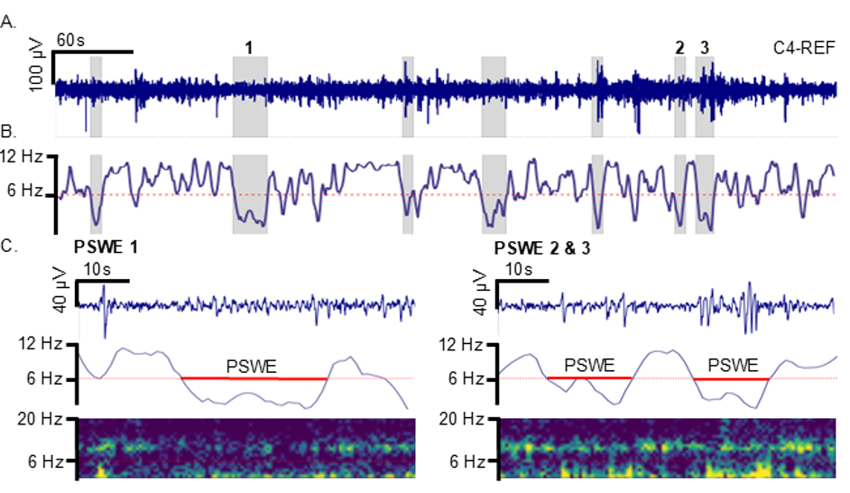

NeuroWeave
NeuroWeave is an EEG analysis workbench for detecting paroxysmal slow-wave events (PSWEs).
What are paroxysmal slow wave events?
Paroxysmal slow wave events (PSWEs) are transient periods of low-frequency cortical activity observed in animal models and people with epilepsy. They are detected automatically from electroencephalography (EEG) when the median power frequency (MPF) remains within the 1–6 Hz range for at least five seconds.

B. MPF over time; PSWEs are detected at 1–6 Hz for at least 5 seconds.
C. Voltage, MPF, and spectrograms for three example PSWEs.
PSWEs are a promising diagnostic and prognostic biomarker of epilepsy.
Related publications
Boyer-Aymé FJM, Imtiaz H, et al. Paroxysmal slow waves mark ictal networks. Epilepsia. 2026.
doi:10.1002/epi.70333
Serlin Y, Imtiaz H, et al. Paroxysmal cortical slowing predicts posttraumatic epilepsy after severe traumatic brain injury. Neurocritical Care. 2026;44(1):50–55.
doi:10.1007/s12028-025-02282-5
Malunga A, Lash S, et al. Paroxysmal slow wave events as a diagnostic biomarker for epilepsy: Lessons from rural Zambia. Epilepsia. 2025;66(12):4869–4880.
doi:10.1111/epi.18598
Serlin Y, Imtiaz H, et al. Paroxysmal cortical slowing linked to drug-resistant epilepsy. eBioMedicine. 2025;116:105780.
doi:10.1016/j.ebiom.2025.105780
Zelig D, et al. Paroxysmal slow wave events predict epilepsy following a first seizure. Epilepsia. 2022;63(1):190–198.
doi:10.1111/epi.17110
Features
1. Import
- Import a broad range of EEG recording formats.
- Discover recordings recursively within local folders.
- Built-in access to OpenNeuro datasets.
2. Preprocessing
Configurable and reproducible preprocessing workflows for individual recordings or complete datasets.
- Configure modular preprocessing steps from the NeuroWeave interface.
- Apply channel selection, rereferencing, filtering, artifact rejection, ICA, and baseline correction.
- Batch analysis with checkpoints to continue if the analysis was interrupted at any point.
3. Analysis
Displays analysis results in a completely local Streamlit app.
- Rapid PSWE and PSD analysis (~5 seconds without ICA for a 19-channel, 20-minute recording).
- Visualize PSWE results, including the topographic distribution of PSWE features both globally and for individual events.
4. Export
- Generate consolidated reports containing recording-level and event-level PSWE features.
- Batch convert preprocessed or original recording data.
- Save individual PSWE epoch waveforms as JSON files.
- Export median power frequency arrays.
Acknowledgements
NeuroWeave is built on MNE-Python. This page follows the compact project-page structure used by MNE-BIDS-Pipeline.
Gramfort A, Luessi M, Larson E, et al. MEG and EEG data analysis with MNE-Python. Frontiers in Neuroscience. 2013;7:267. doi:10.3389/fnins.2013.00267
Stay tuned for public release!
Developed by Hamza Imtiaz, PhD Candidate at the Friedman Lab
Dalhousie University, Canada
Email: hamza@dal.ca
bbbscience.com